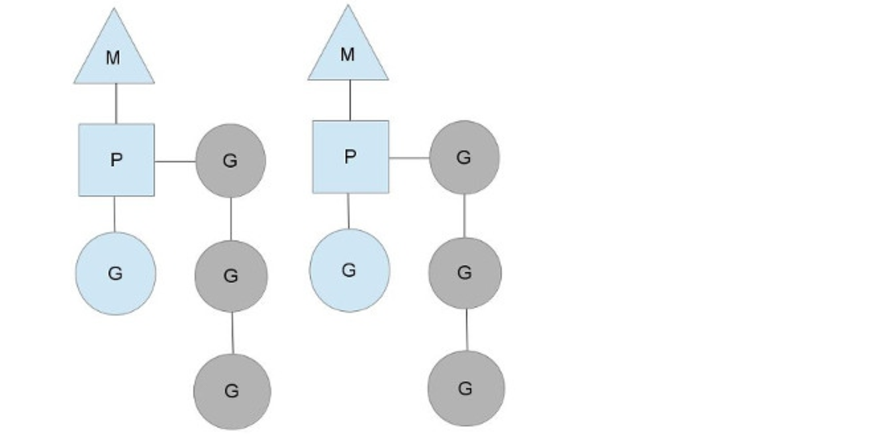
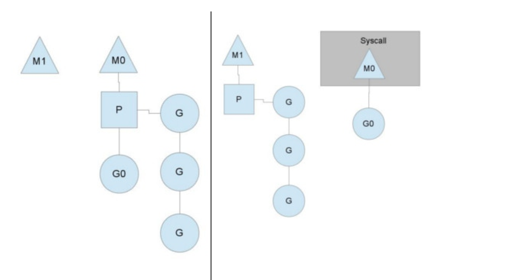
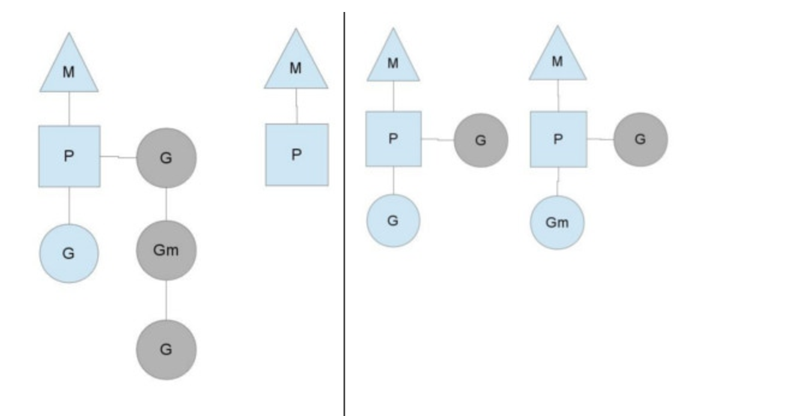

go 原理简析
一般用户空间线程和内核空间线程之间的映射关系有三种：N:1,1:1和M:N
- N:1是说，多个（N）用户线程始终在一个内核线程上跑，context上下文切换确实很快，但是无法真正的利用多核。
- 1：1是说，一个用户线程就只在一个内核线程上跑，这时可以利用多核，但是上下文switch很慢。
- M:N是说， 多个goroutine在多个内核线程上跑，这个看似可以集齐上面两者的优势，但是无疑增加了调度的难度。
go的调度器
Go的调度器内部有三个重要的结构：M，G，P
- M:代表真正的内核OS线程，和POSIX里的thread差不多，真正干活的人
- G:代表一个goroutine，它有自己的栈，instruction pointer和其他信息（正在等待的channel等等），用于调度。
- P:代表调度的上下文，可以把它看做一个局部的调度器，使go代码在一个线程上跑，它是实现从N:1到N:M映射的关键。
我们来看一个示例：

- 图中看，有2个物理线程M，每一个M都拥有一个context（P），每一个也都有一个正在运行的goroutine。
- P的数量可以通过GOMAXPROCS()来设置，它其实也就代表了真正的并发度，即有多少个goroutine可以同时运行。
- 图中灰色的那些goroutine并没有运行，而是出于ready的就绪态，正在等待被调度。
- P维护着这个队列（称之为runqueue），Go语言里，启动一个goroutine很容易：go function 就行，所以每有一个go语句被执行，runqueue队列就在其末尾加入一个goroutine，在下一个调度点，就从runqueue中取出（如何决定取哪个goroutine？）一个goroutine执行。
为何要维护上下文P
因为当一个OS线程被阻塞时，P可以转而投奔另一个OS线程！ 图中看到，当一个OS线程M0陷入阻塞时，P转而在OS线程M1上运行。调度器保证有足够的线程来运行所以的context P。

- 图中的M1可能是被创建，或者从线程缓存中取出。
- 当MO返回时，它必须尝试取得一个context P来运行goroutine，一般情况下，它会从其他的OS线程那里steal偷一个context过来，
- 如果没有偷到的话，它就把goroutine放在一个global runqueue里，然后自己就去睡大觉了（放入线程缓存里）。
- Contexts们也会周期性的检查global runqueue，否则global runqueue上的goroutine永远无法执行。

- 另一种情况是P所分配的任务G很快就执行完了（分配不均），这就导致了一个上下文P闲着没事儿干而系统却任然忙碌。
- 但是如果global runqueue没有任务G了，那么P就不得不从其他的上下文P那里拿一些G来执行。
- 一般来说，如果上下文P从其他的上下文P那里要偷一个任务的话，一般就‘偷’run queue的一半，这就确保了每个OS线程都能充分的使用。
（摘自知乎用户 Yi Wang）